Sewing, knitting, crochet and embroidery courses in Turin
Sewing, knitting, crochet, embroidery, tufting, mending and sashiko courses and workshops in Turin and around.
Search all workshops93 activities coming up · updated on 9 November 2026
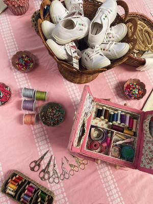
mon9novTextilesEmbroidery and breakfast: stitch togetherMonday 9 November, 10:30–12:00Borgo Po (TO)with CaroLab at TObed tue10novTextilesSashiko pouch: Christmas treeTuesday 10 November, 18:00–20:00Turin · 30 €with Orso Objetos
tue10novTextilesSashiko pouch: Christmas treeTuesday 10 November, 18:00–20:00Turin · 30 €with Orso Objetos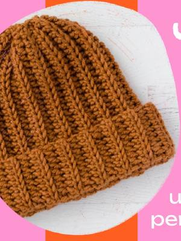
from3novTextilesCrochet course: a beaniefrom Tuesday 3 November to Tuesday 22 December, every Tuesday, 18:30–20:00Pozzo Strada (TO) · 180 € for 8 lessonswith BlaBlanche Lab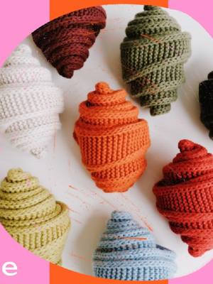
from4novTextilesKnitting course: a scarffrom Wednesday 4 November to Wednesday 23 December, every Wednesday, 18:30–20:00Pozzo Strada (TO) · 180 € for 8 lessonswith BlaBlanche Lab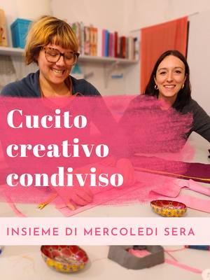
from7octTextilesSocial sewing: evenings in the studiofrom Wednesday 7 October to Wednesday 25 November, every Wednesday, 19:00–21:00Turin · 14 € per eveningwith Favole di Seta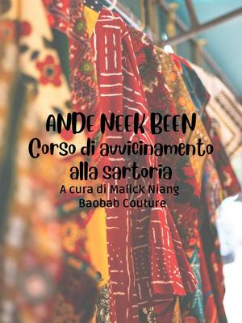
from14octTextilesAnde Neek Been: a tailoring coursefrom Wednesday 14 October to Wednesday 16 December, every Wednesday, 19:15–21:00Barriera di Milano (TO) · 80 €with Malick Niang (Baobab Couture) at Bagni Pubblici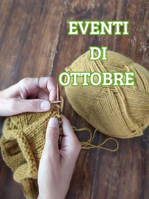
thu12novTextilesAperisferruzzo: a knit-and-chat eveningThursday 12 NovemberSan Salvario (TO) · Freewith Raggomitolando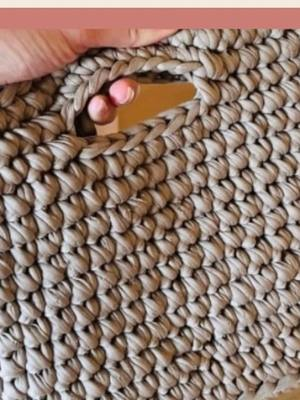
thu12novTextilesCourses at Abilmente: crochet and macraméfrom Thursday 12 November to Sunday 15 November, 09:30Lingotto (TO) · from 8 €with Eppi Lab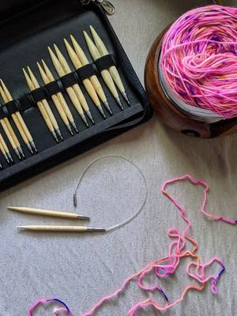
sat14novTextilesMy first beanie: circular needlesSaturday 14 November, 09:30–11:30Savigliano (CN) · 29 €with Taglia e Cuci di Sabina Marcellino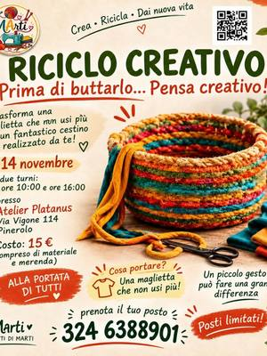
sat14novTextilesCreative upcycling: a basket from a T-shirtSaturday 14 November, 10:00Pinerolo (TO) · 15 €with Le Arti di Marti- sat14novJewelleryBijoux & Brunch: crochet necklaceSaturday 14 November, 10:00Borgo San Dalmazzo (CN)with Villa Teresa
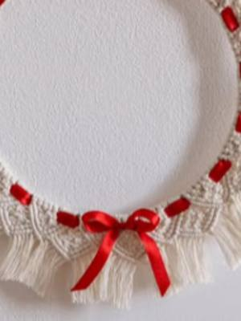
sat14novTextilesMacramé workshop: a hanging garlandSaturday 14 November, 14:30–18:30Villar Perosa (TO) · 40 €with Riflessi di Casa- sat14novTextilesSocial Knitting: birthday specialSaturday 14 November, 15:00–19:00Pozzo Strada (TO)with Torino Social Knitting
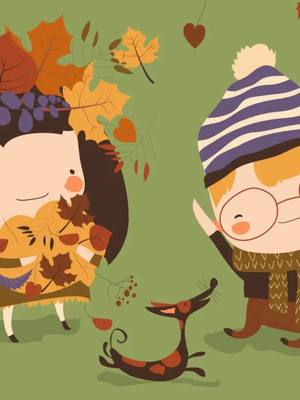
sat14novFor familiesWarp and weft: weaving for kidsSaturday 14 November, 16:00–17:30San Salvario (TO) · 15 €with Vida at Città del Sole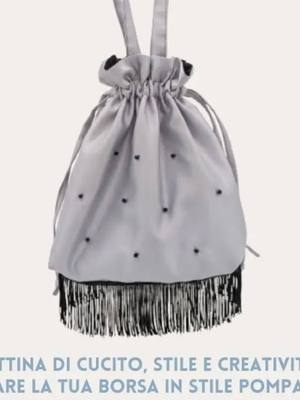
sun15novTextilesSewing workshop: a Pompadour bagSunday 15 November, 09:00–13:00Vanchiglietta (TO) · 50 €with Niki Vintage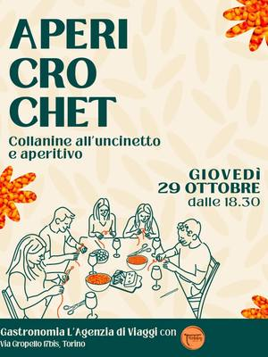
mon16novTextilesApericrochet: crochet necklacesMonday 16 November, 18:30Cit Turin (TO) · sold outwith Hobby della Nonna at Gastronomia L’Agenzia di Viaggi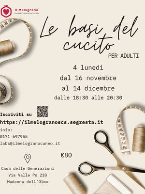
from16novTextilesSewing basics: a course for adultsfrom Monday 16 November to Monday 14 December, every Monday, 18:30–20:30Cuneo (CN) · 80 € for 4 sessionswith Cooperativa Il Melograno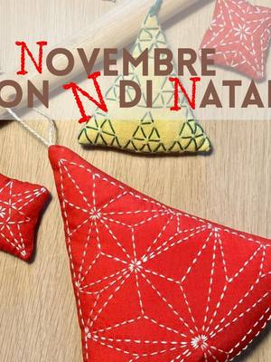
tue17novTextilesOmamori: embroidered lucky charmTuesday 17 November, 18:00–20:00Turin · 30 €with Orso Objetos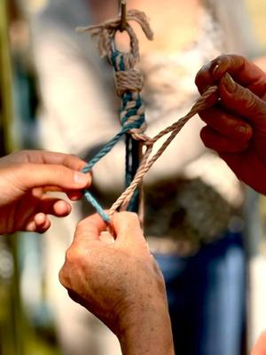
tue17novTextilesMacramé Pills: hanging plant holderTuesday 17 November, 18:30–21:00Vanchiglia (TO) · 55 €with Nodolento at Nodo Tufting Torino- wed18novTextilesCrochet school: for beginnersWednesday 18 November, 10:30–12:30San Salvario (TO) · 20 €with Raggomitolando
- wed18novTextilesCrochet school: for beginnersWednesday 18 November, 17:00–19:00San Salvario (TO) · 20 €with Raggomitolando
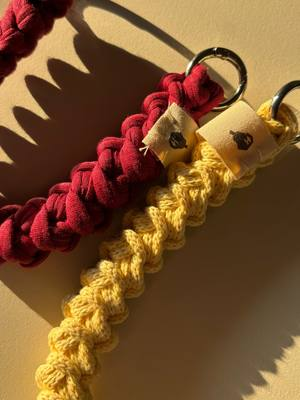
wed18novTextilesLazy Workshop: crochet cordWednesday 18 November, 18:00–20:00San Salvario (TO)with lazypear thu19novTextilesLittle Star: sashiko-style starThursday 19 November, 18:00–20:00Turin · 30 €with Orso Objetos
thu19novTextilesLittle Star: sashiko-style starThursday 19 November, 18:00–20:00Turin · 30 €with Orso Objetos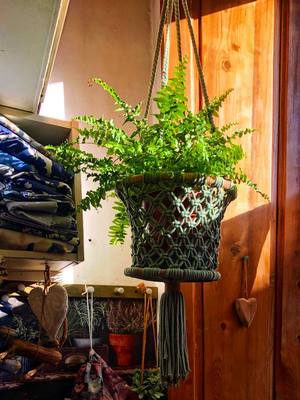
fri20novTextilesMacramé workshop: a plant hangerFriday 20 November, 16:30–19:30San Salvario (TO)with Macraman- sat21novTextilesPunch needle workshop: loop embroiderySaturday 21 NovemberVanchiglia (TO)with Elisa Delledonne at Spazio Costanza
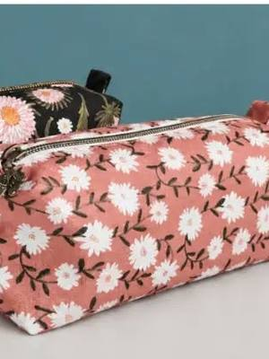
sat21novTextilesSewing workshop: boxy wash bagSaturday 21 November, 09:00–13:15Settimo Torinese (TO) · 40 €with Club del Cucito di Studio Indaco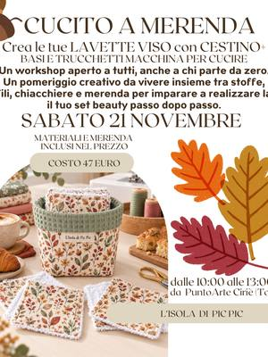
sat21novTextilesCucito a Merenda: face pads and basketSaturday 21 November, 10:00–13:00Ciriè (TO) · 47 €with L’Isola di Pic Pic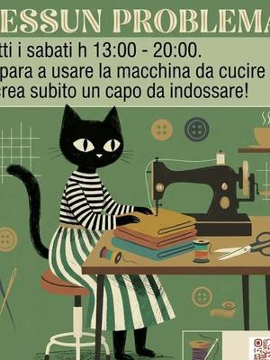
sat21novTextilesSewing workshop: a kimonoSaturday 21 November, 13:00–20:00San Salvario (TO)with OPEN 10125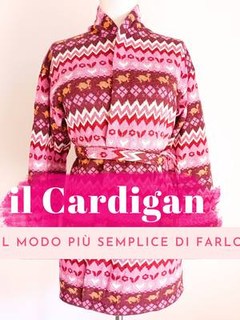
sat21novTextilesCardigan workshop: sewing with knitsfrom Saturday 21 November to Sunday 22 November, 14:00–18:30Turin · 85 €with Favole di Seta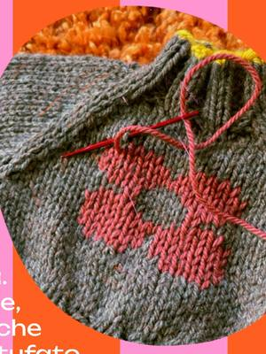
sat21novTextilesOld = new: duplicate stitch embroiderySaturday 21 November, 15:00–18:00Pozzo Strada (TO) · 50 €with BlaBlanche Lab- sat21novTextilesLazy Workshop: crochet cordSaturday 21 November, 15:00–18:00San Salvario (TO)with lazypear
 sat21novTextilesSashiko hitomezashi: Japanese embroiderySaturday 21 November, 15:00–17:00Pinerolo (TO) · 35 €with Orso Objetos
sat21novTextilesSashiko hitomezashi: Japanese embroiderySaturday 21 November, 15:00–17:00Pinerolo (TO) · 35 €with Orso Objetos- sat21novTextilesSocial Knitting: knitting togetherSaturday 21 November, 15:00–19:00San Salvario (TO)with Torino Social Knitting
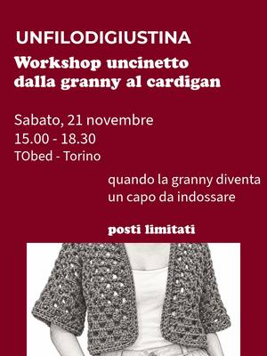
sat21novTextilesFrom granny square to cardigan: crochetSaturday 21 November, 15:00–18:30Borgo Po (TO) · 50 € · sold outwith Un filo di Giustina at TObed- sat21novTextilesDecorate your tote bag: drawings and coloursSaturday 21 November, 18:30–19:30Santa Rita (TO)with Daphne at Anima Atelier
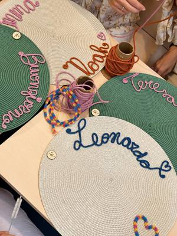
sun22novTextilesTricotin & Brunch: a knitted placematSunday 22 NovemberCentro (TO) · 49 €with Aperi Pods- sun22novTextilesSewing workshop: a Pompadour bagSunday 22 November, 09:00–13:00Vanchiglietta (TO) · 50 €with Niki Vintage
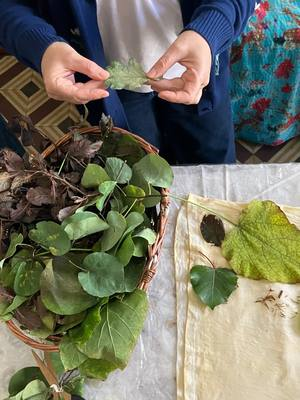
sun22novTextilesShibori and indigo: natural blue dyeingSunday 22 November, 10:00–13:00San Donato (TO) · 55 €with Patrizia Berto (Startlap) at Orso Objetos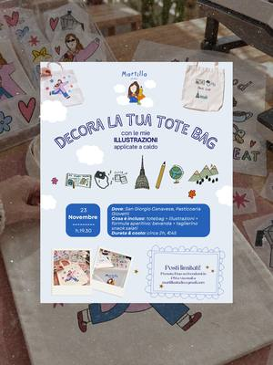
mon23novTextilesTote bag workshop: iron-on illustrationsMonday 23 November, 19:30–21:30San Giorgio Canavese (TO) · 45 €with Martilla Studio- tue24novTextilesKnitting school: for beginnersTuesday 24 November, 10:30–12:30San Salvario (TO) · 20 €with Raggomitolando
 tue24novTextilesTriangle Tree: embroidered decorationTuesday 24 November, 18:00–20:00Turin · 30 €with Orso Objetos
tue24novTextilesTriangle Tree: embroidered decorationTuesday 24 November, 18:00–20:00Turin · 30 €with Orso Objetos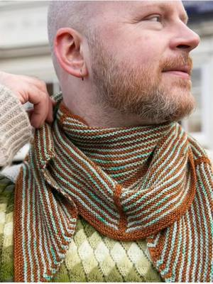
wed25novTextilesClockwork KAL: Stephen West’s shawlWednesday 25 November, 18:00–20:00San Salvario (TO) · Freewith Raggomitolando- thu26novTextilesSewing workshop: boxy wash bagThursday 26 November, 09:00–13:15Settimo Torinese (TO) · 40 €with Club del Cucito di Studio Indaco
- thu26novTextilesKnitting school: for beginnersThursday 26 November, 17:00–19:00San Salvario (TO) · 20 €with Raggomitolando
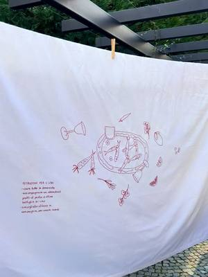
thu26novTextilesStitch Happens: embroidery eveningThursday 26 November, 19:00–21:30Aurora (TO) · 35 €with Ricamini Brutti at Velvet Truffle Riot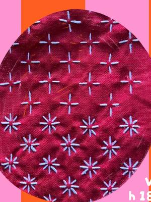
fri27novTextilesSashiko workshop: Japanese embroideryFriday 27 November, 18:00–20:00Pozzo Strada (TO) · 35 €with Orso Objetos at BlaBlanche Lab fri27novOtherUpholstery workshop: round poufFriday 27 November, 18:00–20:00Barriera di Milano (TO) · 100 €with Magazzini Tessili
fri27novOtherUpholstery workshop: round poufFriday 27 November, 18:00–20:00Barriera di Milano (TO) · 100 €with Magazzini Tessili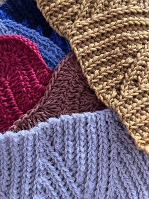
sat28novTextilesFull Immersion: crochet from scratchSaturday 28 November, 14:30–18:30Lingotto (TO) · 56 €with Un filo di Giustina- sat28novTextilesLazy Workshop: crochet cordSaturday 28 November, 15:00–18:00San Salvario (TO)with lazypear
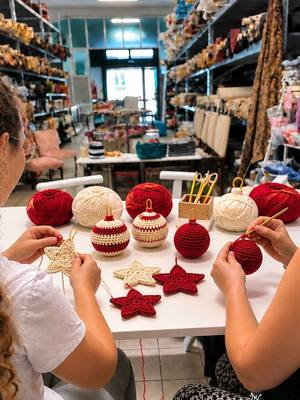
sat28novTextilesCrochet workshop: a Christmas projectSaturday 28 November, 15:00–18:00Barriera di Milano (TO) · 60 €with Magazzini Tessili- sat28novTextilesDecorate your tote bag: drawings and coloursSaturday 28 November, 18:30–19:30Santa Rita (TO)with Daphne at Anima Atelier
- sun29novTextilesSewing workshop: a Pompadour bagSunday 29 November, 09:00–13:00Vanchiglietta (TO) · 50 €with Niki Vintage
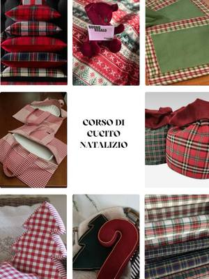
sun29novTextilesSewing workshop: a Christmas projectSunday 29 November, 15:00–18:00Barriera di Milano (TO) · 60 €with Magazzini Tessili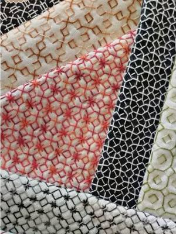
sat5decTextilesSashiko Hitomezashi: from pattern to variationsSaturday 5 December, 09:00–13:00Settimo Torinese (TO) · 30 €with Officina Sashiko di Studio Indaco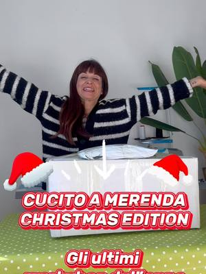
sat5decTextilesSewing & Snacks: Christmas bowsSaturday 5 December, 14:00–17:00Lingotto (TO) · 68 €with L’Isola di Pic Pic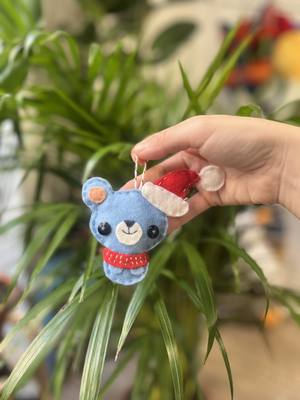
fri11decTextilesChristmas Bestiary: felt creatureFriday 11 December, 18:30Vanchiglia (TO) · 55 €with Gabriele Tafuni at Nodo Tufting Torino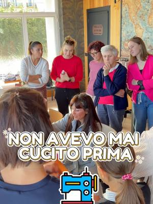
sat12decTextilesCucito a Merenda: Christmas bowsSaturday 12 December, 14:30–17:30Pianfei (CN) · 65 €with L’Isola di Pic Pic at Alter Ego- sat12decPrintingPerpetual Calendar: screen printing and embroiderySaturday 12 December, 15:00Vanchiglia (TO)with Babel e Chiara Allione at Nodo Tufting Torino
- wed16decTextilesFluffy Charm: punch needle pendantWednesday 16 December, 18:30Vanchiglia (TO)with Chiara Allione at Nodo Tufting Torino
- sat16janTextilesOpen day: try a sewing machineSaturday 16 JanuarySan Salvario (TO)with OPEN 10125
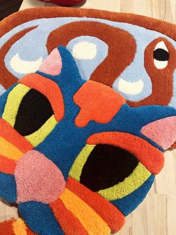
from16janTextilesAdvanced tufting course: a finished rugfrom Saturday 16 January to Sunday 17 January, 15:00–20:00Vanchiglia (TO) · 360 €with Nodo Tufting Torino- sat30janTextilesSewing workshop: trousers with pocketsSaturday 30 January, 13:00–20:00San Salvario (TO)with OPEN 10125
- sat20febTextilesSewing workshop: Sekai jacketSaturday 20 February, 13:00–20:00San Salvario (TO)with OPEN 10125
- sat20marTextilesSewing workshop: a dressSaturday 20 March, 13:00–20:00San Salvario (TO)with OPEN 10125
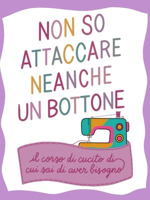
dateof your choiceTextilesSewing course: from basics to your own clothesDate of your choiceSan Salvario (TO) · from 50 € per modulewith Albergo di Virtù Sartoria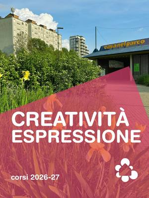
everysatTextilesCraft Room: knitting and crochetEvery SaturdayMirafiori (TO) · 10 € per sessionwith Mihaela Mates at Casa nel Parco- dateto be confirmedOtherCascina Roccafranca: this season’s coursesDate to be confirmedMirafiori (TO)with Cascina Roccafranca
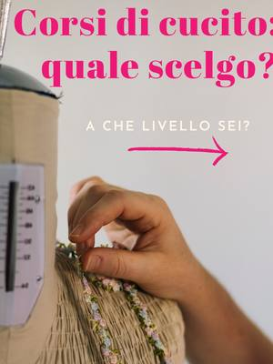
dateto be confirmedTextilesBeginner sewing course: from zero to hemsDate to be confirmedTurin · 48 €with Favole di Seta- dateof your choiceTextilesCreative sewing and fashion courseDate of your choiceTurin · 139 € for 6 lessonswith Kreative Club
 dateof your choiceOtherUpholstery and restyling: poufs and furnitureDate of your choiceBarriera di Milano (TO) · from 20 €with Magazzini Tessili
dateof your choiceOtherUpholstery and restyling: poufs and furnitureDate of your choiceBarriera di Milano (TO) · from 20 €with Magazzini Tessili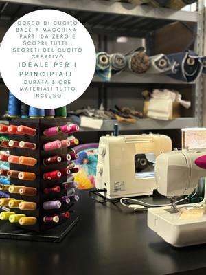
dateof your choiceTextilesSewing workshops: clutch bags and kimonosDate of your choiceBarriera di Milano (TO) · from 50 €with Magazzini Tessili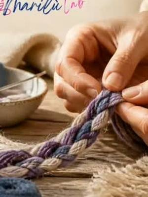
everytueTextilesTextile arts course: crochet and laceEvery TuesdayCollegno (TO)with Marilù Lab- everywedTextilesTextile arts course: crochet and laceEvery WednesdayTurinwith Marilù Lab
- dateof your choiceTextilesTextile arts course: crochet and laceEvery 3 weeksVenaria Reale (TO)with Marilù Lab
- dateof your choiceTextilesTextile arts lessons: tailor-made coursesDate of your choiceTurinwith Marilù Lab
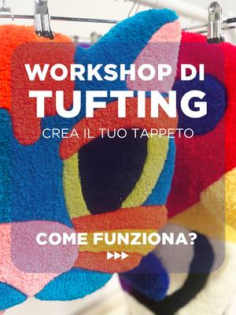
dateof your choiceTextilesTufting workshop: make your own rugDate of your choiceVanchiglia (TO) · from 80 €with Nodo Tufting Torino- dateof your choiceTextilesPrivate lessons: knitting and crochetDate of your choiceSan Salvario (TO) · 24 € per lessonwith Raggomitolando
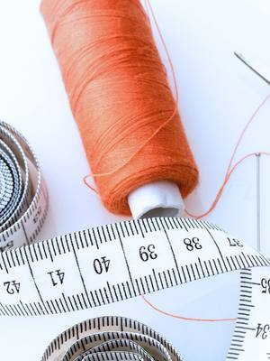
dateof your choiceTextilesSewing course: from the basics to re-fashionDate of your choiceCentro (TO)with Polo Le Rosine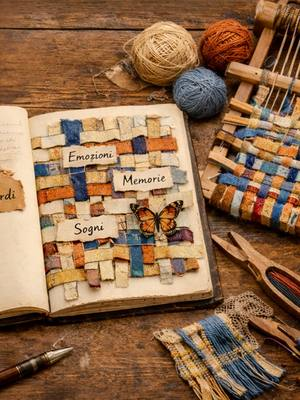
dateto be confirmedTextilesStrappi e intrecci: journaling and weavingDate to be confirmedCentro (TO)with Marilù Lab at Polo Le Rosine- dateof your choiceTextilesSewing lessons: pattern-making and tailoringDate of your choiceSan Salvario (TO)with Sassi
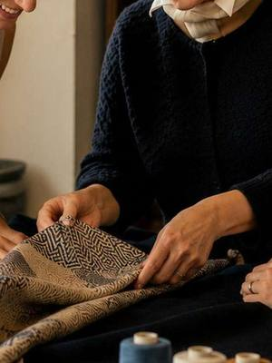
dateof your choiceTextilesItalian fabrics: make a fabric necklaceDate of your choiceBorgo Po (TO) · 104 €with Club Joy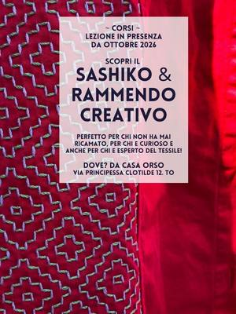
everyfriTextilesSashiko course: Japanese embroideryEvery Friday, 10:00–12:00San Donato (TO) · 30 € per sessionwith Orso Objetos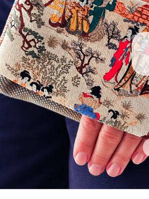
everytueTextilesCreative sewing workshop: one project at a timeEvery Tuesday, 10:00–12:00San Mauro Torinese (TO)with Marisa Etzi at upTOyou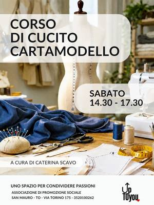
everysatTextilesSewing course: patterns and dressmakingEvery Saturday, 14:30–17:30San Mauro Torinese (TO)with Caterina Scavo at upTOyou- everywedTextilesStitch and chat: a weekly knitting circleEvery Wednesday, 15:00San Salvario (TO)with Casa del Quartiere di San Salvario
- everywedTextilesKnit with Cuore di Maglia: knitting togetherEvery Wednesday, 15:00–17:00San Salvario (TO)with Raggomitolando with Cuore di Maglia
- dateof your choiceTextilesEmbroidery group: mending and sashikoEvery two weeks, 15:30–17:30San Donato (TO) · 25 € per sessionwith Orso Objetos at Più SpazioQuattro
- everymonTextilesIl filo che unisce: Monday crochetEvery Monday, 17:00–19:00San Mauro Torinese (TO)with Tiziana Boccalatte at upTOyou
- everymonTextilesCreative mending course: visible mendingEvery Monday, 17:30–19:30San Donato (TO) · 30 € per sessionwith Orso Objetos
- everyfriTextilesCrochet class: a personalised pieceEvery Friday, 18:00–20:00Aurora (TO) · 18 € per lessonwith Fabiola Maria Cafe at Cecchi Point
- everythuTextilesCrochet Cafè: crochet for everyoneEvery Thursday, 18:00–20:00Aurora (TO) · Pay what you likewith Ristoro
- everytueTextilesSashiko course: Japanese embroideryEvery Tuesday, 18:30–20:30San Donato (TO) · 30 € per sessionwith Orso Objetos
- everywedTextilesThe thread that binds: crochet courseEvery Wednesday, 19:00–21:00San Mauro Torinese (TO)with Tiziana Boccalatte at upTOyou